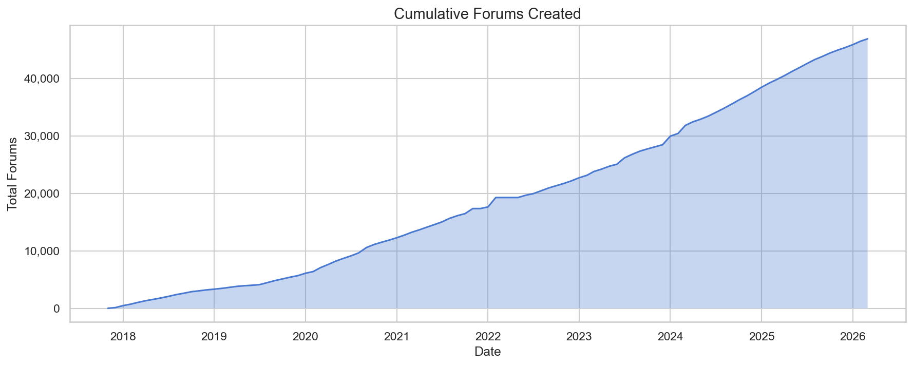
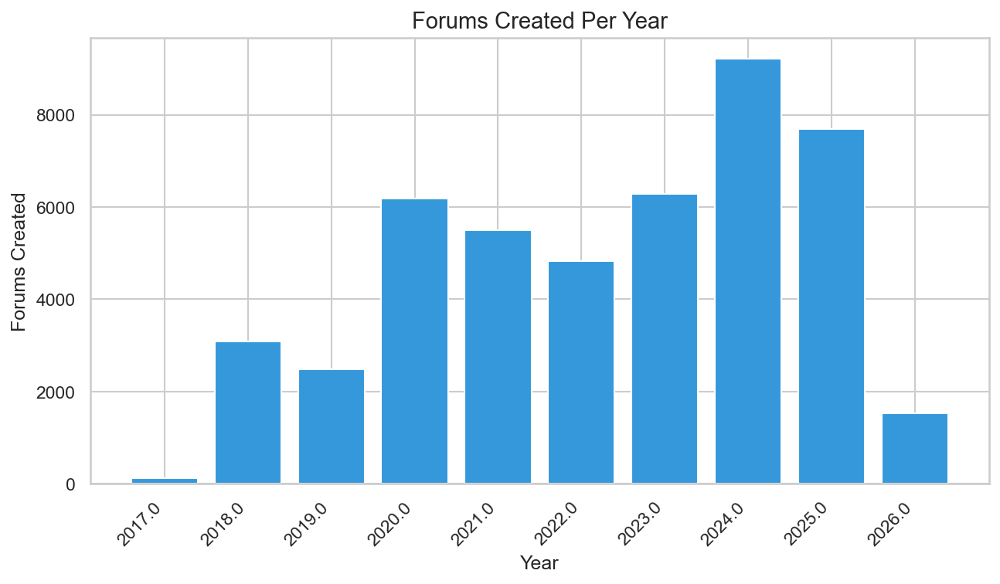
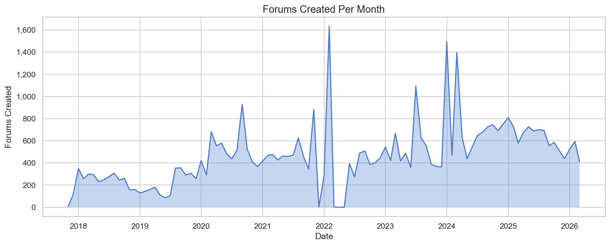
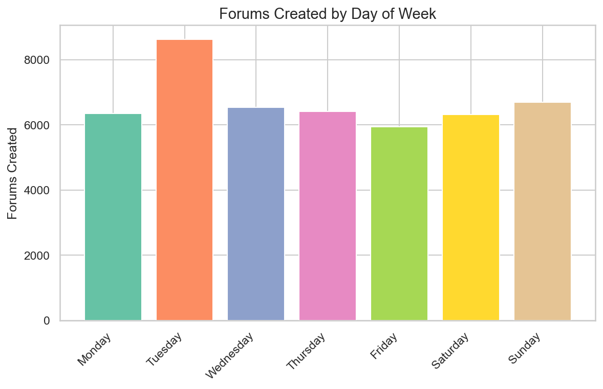
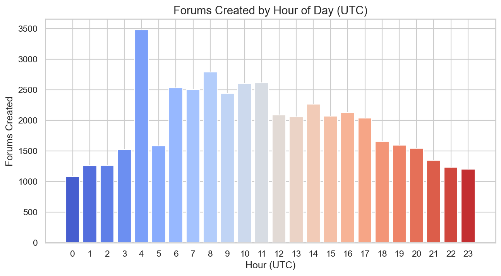
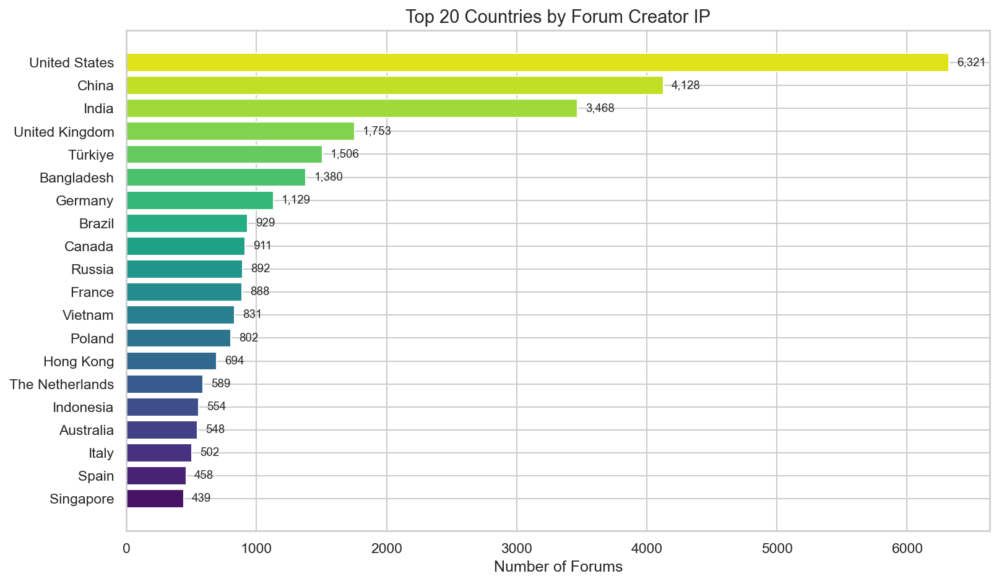
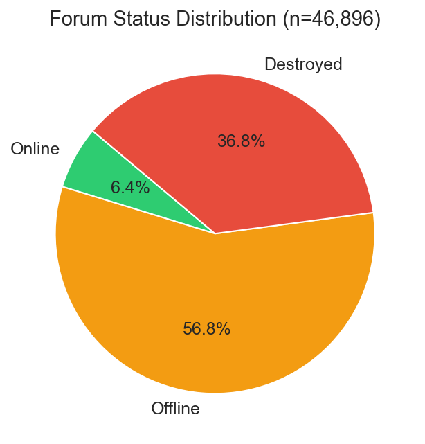
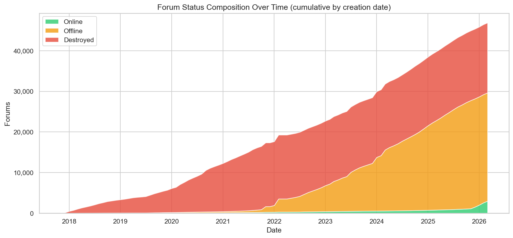
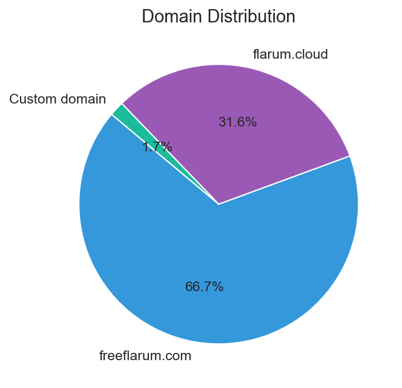
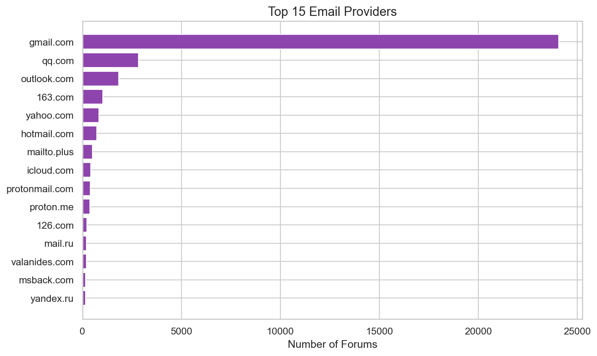

FreeFlarum Statistics as of 2026-03⚓︎
This page presents an overview of FreeFlarum's platform statistics, covering forum creation patterns, growth trends, geographic distribution, and more. All data is based on a snapshot taken on 2026-03.
Cumulative Growth⚓︎

Since its inception in late 2017, FreeFlarum has steadily grown to over 46,000 forums created in total. Growth has been consistent and roughly linear since 2020, with no signs of slowing down. The steepest growth occurred between 2023 and 2026, reflecting sustained demand for free forum hosting.
Forums Created Per Year⚓︎

Annual forum creation has risen significantly over time. After modest beginnings in 2017-2019, the platform saw a major jump in 2020 (~6,200 forums). A slight dip in 2022 (~4,800) was followed by a strong recovery, peaking at over 9,200 forums in 2024 - the most active year to date. 2025 remained strong at ~7,700 forums. The 2026 bar (~1,500) reflects only the first few months of the year.
Forums Created Per Month⚓︎

Monthly creation rates show a baseline of roughly 200-600 forums per month, with occasional sharp spikes. Notable peaks occurred around mid-2020, late 2021, early 2022, and mid-2024 (exceeding 1,400 in a single month). These spikes likely correspond to viral mentions, promotional events, or increased demand for online community platforms.
Forums Created by Day of Week⚓︎

Forum creation is relatively evenly distributed across the week, but Tuesday stands out as the most popular day with ~8,600 forums - roughly 30% more than the average weekday. Friday sees the lowest activity (~5,900). The weekend days (Saturday and Sunday) remain comparable to most weekdays, suggesting FreeFlarum's user base creates forums as a personal or hobby activity rather than work-related.
Forums Created by Hour of Day (UTC)⚓︎

The hourly distribution reveals a clear peak at 04:00 UTC (~3,500 forums), with a secondary peak around 08:00-11:00 UTC. Activity gradually tapers off through the afternoon and evening (UTC), reaching its lowest point around midnight UTC (~1,100). This pattern is consistent with a user base heavily concentrated in Asian time zones (04:00 UTC = late morning/midday in China and South/Southeast Asia), which aligns with the geographic data below.
Top 20 Countries by Forum Creator IP⚓︎

The United States leads with ~6,300 forums, followed closely by China (~4,100) and India (~3,500). The United Kingdom (~1,750) and Turkey (~1,300) round out the top five. The top 20 also includes Bangladesh, Germany, Brazil, Canada, Russia, France, Vietnam, Poland, Hong Kong, the Netherlands, Indonesia, Australia, Italy, Spain, and Singapore. This wide geographic spread demonstrates FreeFlarum's global appeal.
Forum Status Distribution⚓︎

Out of 46,896 total forums, the majority are currently offline (56.8%). Another 36.8% have been destroyed (permanently deleted either by FreeFlarum staff or by the forum owner themselves). Only 6.4% of all forums ever created are currently online. This is a natural pattern for a free hosting service, as many forums are created for testing or short-term use.
Forum Status Composition Over Time⚓︎

This stacked area chart shows how the cumulative mix of online, offline, and destroyed forums has evolved. In the early years (2018-2020), the destroyed proportion was relatively small, but it has grown substantially over time as older forums get cleaned up. The offline category (orange) makes up the largest portion. The online slice (green) at the bottom remains thin but consistent, showing that a steady base of active forums is maintained at any given time.
Domain Distribution⚓︎

The vast majority of forums (66.7%) use the default freeflarum.com subdomain. 31.6% use the newer flarum.cloud domain. Only 1.7% of forums use a custom domain, which is expected given that custom domains require additional setup and a certain level of commitment to the forum.
Top 15 Email Providers⚓︎

Gmail dominates overwhelmingly with ~24,000 forums (over half of all registrations). QQ Mail comes in second (~3,000), reflecting the large Chinese user base. Outlook.com (~1,500) and 163.com (~700, another Chinese provider) follow. The remaining providers include Yahoo, Hotmail, mailto.plus, iCloud, Protonmail, Proton.me, 126.com, Mail.ru, and Yandex.ru - each with relatively small shares. The presence of Chinese email providers (QQ, 163, 126) and Russian providers (Mail.ru, Yandex) is consistent with the geographic distribution data.